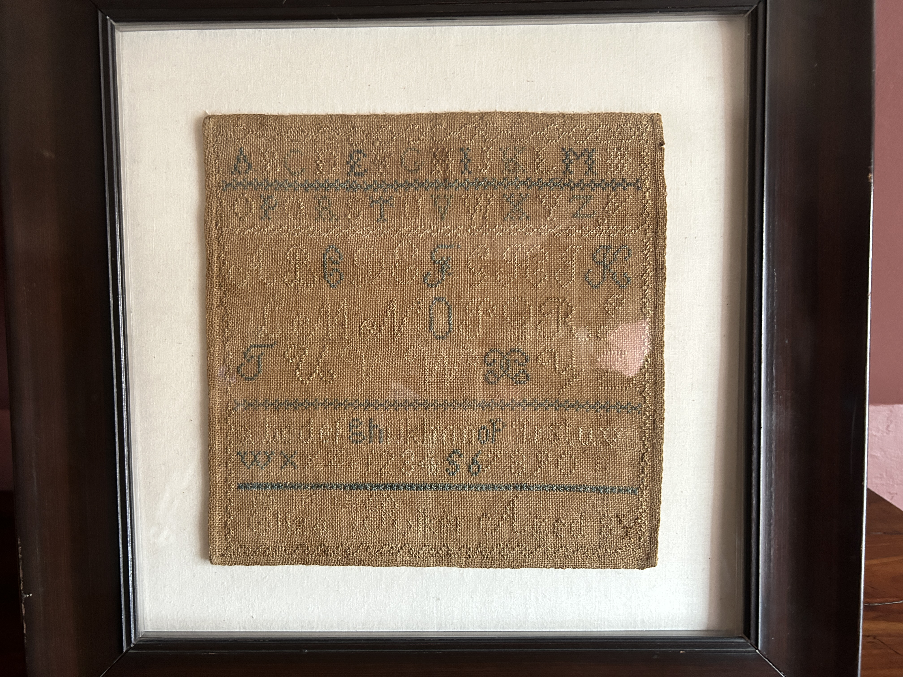

On the first floor there are two large parlors. These would have been used for a variety of activities including dining and socializing with friends and business and political associates.
When William died in 1787, his son Jacobus took over the house and farm. Jacobus moved into the farmhouse around 1793 and inherited a modest farmhouse that he would alter significantly over the next several decades. By 1820, there were 10 people living in the household. Jacobus was the head of a household that included: three of his sons (Jacob, Isaac and Michael), his young grandson James Frederick Smith, his niece Maria, one unidentified white woman, a free black woman, a free black boy and one enslaved male.
The founding father of our Dyckman family was Jan Dyckman, who arrived in New Amsterdam in the 1600’s from Westphalia. By the time of the American Revolution, the Dyckman family homestead was located roughly near 210th Street and the East River and Jan’s grandson William had inherited Dyckman land from his father. During the British occupation of Manhattan in 1776-1783, William Dyckman and his family sought refuge in upstate New York.
Jacobus, who primarily identified himself as a farmer, was also involved in local politics. Two of his sons worked on the farm while two others pursued higher education. We believe the portrait in this room is of his son, Dr. Jacob Dyckman.
Family tradition tells of a free black woman named Hannah who lived with the family and worked as a cook. Based on those stories we believe she was living in the farmhouse in 1820. According to census records, Hannah was born between 1784-1794 which would make her between the ages of 26 and 36 in 1820. A 1917 legislature states the following: “the cook, black Hannah, who had been born on the place as the daughter of a slave who was partly of Indian blood. Tradition describes her with a bright-colored headgear, face black as ebony, temper decidedly irregular, and a strong leaning toward a corncob pipe.”
The Farmhouse has two kitchens, Winter and Summer. The Winter Kitchen would have kept the home very warm in the cold months and would also have been used as a non-cooking work space in the summer. The Summer Kitchen (closed to the public) has a small bedroom above it and that room, as well as both kitchen spaces, may have been the sleeping quarters for the free black woman, free black boy and one male slave within the household.
It might be carved by the Dyckman kids. It might be carved by the soldiers who occupied this farmhouse.
It is believed that the second floor was one open space up until the 1820s when it was divided into the separate bedrooms still present today

Some rooms were furnished with the goal of recreating a New York interior in the year 1800. They collected furniture and objects dating to the 18th and 19th centuries, some of which originally belonged to the Dyckman family. The embroidery practice displayed over the cabinet was a typical activity for high-class women in the colonial years. Their museum rooms reflected the early 20th century romantic view of colonial life.